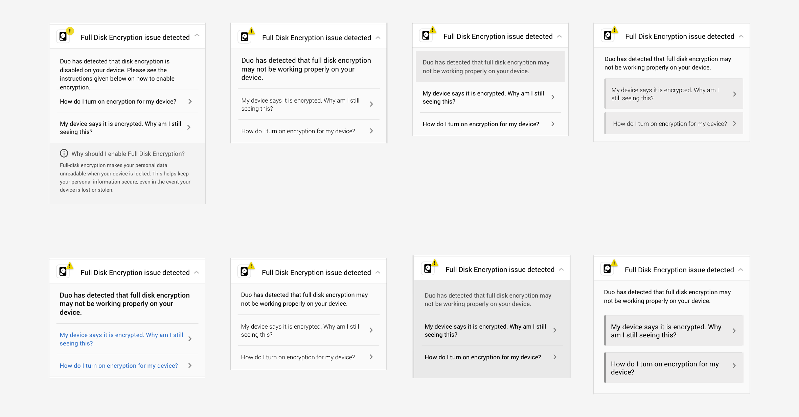

Redesigned the Security feature on Duo Mobile to improve users' trust in the feature
Task: Redesign the Security Checkup feature to enhance users' trust in the system
What I did: User journey map, sketching, prototyping, usability testing, icon design, content strategy, collaborative work with developers, designers, PM and researchers
Duration: May 2017 - August 2017
Duo Mobile works with Duo Security's 2-factor authentication service and can generate passcodes for login and receive push notifications for easy, one-tap authentication. My primary project as a designer on Duo Mobile, was to redesign the Security Checkup feature. This feature was released as a Beta feature (Admin account only) in early 2017, and was slated for a General Availability (GA) release in Fall 2017.
The feature
Security Checkup
The Security Checkup feature was responsible for checking the security hygiene of a device. It's primary purpose was to alert the user to security issues on their device such as the absence of a passcode, an out of date Operating System(OS), etc. It also aimed to highlight the importance of good security hygiene (the Why) and provide instructions for remediation of the detected issues (the How).
The Challenge
Why was there a need to improve it?
Initial testing of the feature in the Beta version brought three problems to light. Users perceived the feature as simply an alert rather than a helper; this could lead to them missing out on security issues on their device thus potentially exposing themselves to threats. The feature also did not accomodate edge cases which led to usability issues that ended up deteriorating users' trust in the feature. There was also an opportunity to improve feature discovery and subsequent user interaction(s).
Approaching the redesign process
The entire redesign comprised three main stages — changing the perception, designing for accommodating edge cases and improving the user interaction.
The Redesign
I. Improving the users' perception
The perception of this feature resulted from a combination of visuals and the tone of the copy. The ultimate goal was to make the users perceive the feature as a helper and not as alert. I developed and tested various icon iterations to improve the visuals.
The old copy was a bit too specific which resulted into a couple of edge cases (discussed below). By simply changing the tone of the copy and making it a bit fuzzy, I could provide more context to the user while creating space for tackling the edge cases.
The Redesign
II. Designing for edge cases to improve users' trust
There were a couple of edge cases that the Beta version failed to address — disk encryption and Operating System (OS). To accomodate edge cases, I had to design an additional page for each type. The objective was to provide enough design affordance so that users understood that these links were clickable. I created various iterations by tweaking the visual design for the dropdown in order to deliver the affordance.

Not all Android devices were shipped with full disk encryption (FDE), so some users had to manually enable encryption on their device. The Beta version of the feature addressed this case properly. But, the feature also incorrectly identified encrypted devices with no passcode as non-encrypted devices. So, it became necessary to design a set of remediation instructions for this edge case.
The edge case for the OS issue resulted from the fact that some Android device manufacturers occasionally do not provide updates to older device models. To tackle this, I designed succinct instructions to carefully educate the users that the concept of latest OS version supported by their device may not the same as the latest OS available for Android OS.
The Redesign
III. Rethinking the user interaction
The main goal of the feature was to notify users of the security issues without being persistent on the home screen. I designed and tested iterations featuring various ways (including swipe gestures, static drawers, action sheets) a user could interact with the feature.
User research found that users wished to hide the security warning notifications. There needed to be a sweet spot in between notifying users about security issues but also letting them dismiss that notification. Since having perfect security hygiene was vital, it became necessary to educate users about an alternate way to access this feature after dismissing the notification.
Putting it all together
The image below shows an updated flow of the Security Checkup feature complete with all of the aforementioned improvements right from a prominent toast that enhanced feature discovery to updated copy and visual tweaks that addressed remediations for edge cases.
Next Steps
After getting the designs tested and approved by the senior designers, I shared them with the developers though a tool called Zepelin. Text (landing text + remediation instructions) and assets (icons and illustrations) were some of the other materials that I delivered to the developers. The feature was shipped in late September and is currently in use by over 2.5M users of Duo Mobile.
What I delivered
By the end of my internship, I had -
Redesigned the flow, icons, text and delivered high quality assets for the feature on Duo Mobile (Android)
Designed a small functionality in the Duo Admin Panel for enabling the Security Checkup feature
Moderated 4 usability testing sessions to uncover opportunities for improvement
Worked collaboratively with senior designers, user researchers, developers and a PM
Looking back
I was fortunate enough to spend my summer at a wonderful company being surrounded by some of the kindest people I have ever met. Working in a professional environment at Duo made me aware of my shortcomings as a designer and helped polish my communication skills. The collaboration with developers gave me a brief taste of working with non-design oriented stakeholders.